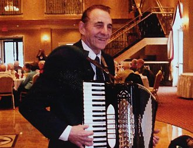

|
 |
MUSICAL ENTERTAINMENT
Frank "K" Duo and Company
The Frank "K" Duo will entertain your guests with a multitude of customized performances. Our Duo will entertain with Fran on drums and vocals and Frank on synthesizer and accordion. For larger functions, Frank "K" and Company can be expanded to as many as six musicians. Frank "K" has the experience, professionalism, and versatility to provide the kind of entertainment your guests will appreciate and take pleasure in.
Add a DJ
Our performances can include continuous music as a DJ which is an added benefit to the customer at no extra charge. Fran, our talented vocalist, will also sing along with some of the musical selections resulting in a unique accomplishment. This combination provides both live and DJ music to benefit each customer.
Strolling
Strolling can also be provided creating an elegant atmosphere for any social event. We have a large repertoire for taking requests at each table. This personal touch makes the experience memorable.
Oktoberfest is our Specialty!
We specialize in Oktoberfest Parties complete with authentic German Music and Lederhosen. Frank "K" if one of the best in the Chicago land area continually adding satisfied customers every year. For all special events or themed parties, we take pride in working with the customer to make their party a success. Read More Upcoming Performances
February, 2017February 8 - Willow Falls Center, Crest Hill - 3:00 - 4:00 pm February 9 - Swedish club, Chicago - 6:00 - 9:00 pm February 10 - York Township Center, Lombard - 1:45 - 3:15 pm February 24 - Lexington Square, Elmhurst - 2:30 - 3:30 pm February 25 - Public House, 1508 W. Jarvis St., Chicago - 8:00 PM Mardi Gras with Cajun & Zydeco Music - OPEN TO THE PUBLIC Recent Performances
January, 2017January 14 - The Garlands, Barrington, 5:30 - 7:00 pm January 17 - Central Baptist, Norridge, 2:00 - 3:00 pm January 20 - Lexington Square, Elmhurst 3:00 - 4:00 pm January 26 - Brookdale, Hoffman Estates - 6:30 - 8:00 pm January 27 - Ivy Apartments, Chicago, 3:00 - 4:00 pm January 28 - Public House, 1508 W. Jarvis, Chicago, 7:30 -9:30pm "OPEN TO THE PUBLIC" -New Year- December 3 - The Max, Brookfield - 11:00 am - 1:00 pm December 3 - American Legion Hall, Chicago - 7:00 - 8:00 pm December 4 - Casa Fan Carlo, Northlake - 12:00 noon - 2:00 pm December 8 - Manzo Banquets, Des Plaines - 6:00 - 9:00 pm December 9 - York Township Center, Lombard, 1:45 - 3:15 pm December 9 - Aviana Banquets, Palos Hills, 7:30 - 8:30 pm December 10 - PublicHouse, 1508 Jarvis, Chicago - 7:30 - 9:30 pm--OPEN TO THE PUBLIC December 13 - Presence Hospital, Joliet - 11:00 am - 2:00 pm December 14 - Empress Banquets, Elmhurst, (Addison Park District) - 1:00 - 3:30 pm December 14 - The Village at Victory Lakes, Lindenhurst - 6:30 - 7:30 pm December 17 - Diplomat Banquets, Elmhurst, 7:30 - 10:30 pm December 18 - Hinsdale Country Club, Clarendon Hills - 5:00 - 9:00 pm December 31 - Brookdale of Hoffman Estates New Years Eve Party - 12:00- 1:30 pm December 31 - Public House,1508 Jarvis,Chicago -10:00 pm-12:30 am -OPEN TO THE PUBLIC See a listing of Frank "K"'s past performances. |
Contact Us - (847)967-1184 | Email - 
© 2012 Frank "K" Music - Created by First Circle Design